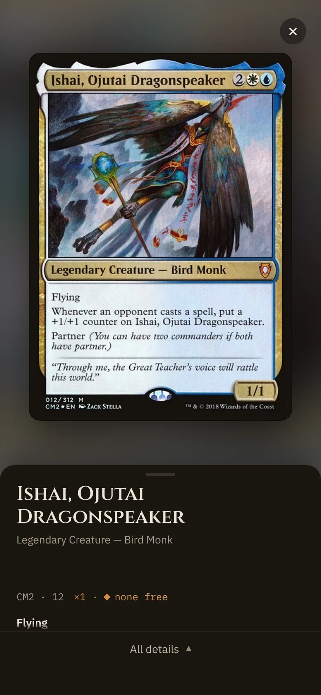
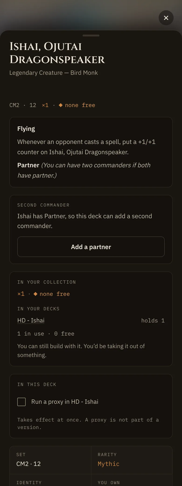
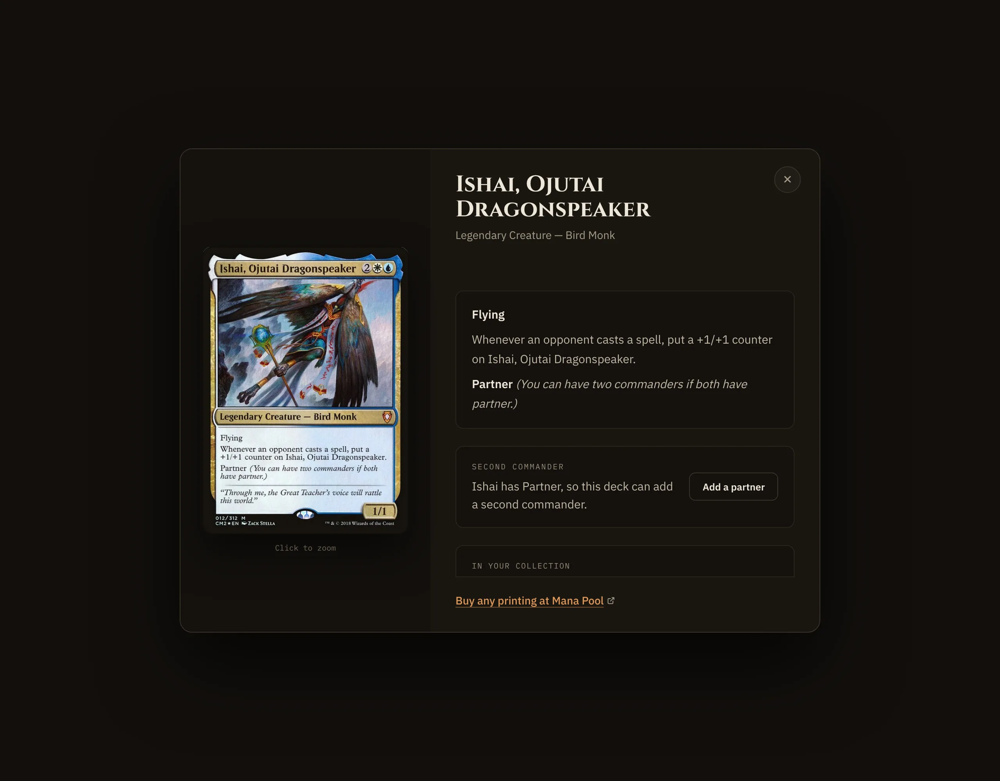

Door
Both doors, one sheet. Change commander already lists the pairs a deck’s own 99 can make, so the outside partners join that list. The commander’s card details is where a player reads “Partner” and learns the deck can take one, so it carries the second door. Drawn on the shipped CardModal, rendered from main.
D0 · card details, phone

The shipped card details for the deck’s own commander, opened from its deck page. Nothing changes in the peek: All details opens the full sheet.
D1 · all details, phone

The full sheet, every shipped box in order. Second commander goes straight after the card’s own facts (oracle text, card facts), before what you own: one line naming the ability and Add a partner at 44px. It opens Change commander on its Add a partner section.
D1 · card details, desktop

Desktop: the same place in the details column, the button beside the line at 36px; the column scrolls to the rest as shipped. Drawn only for a single-commander deck whose commander prints a pair ability, on its own deck page. No ability, a pair already, or another page: no box.